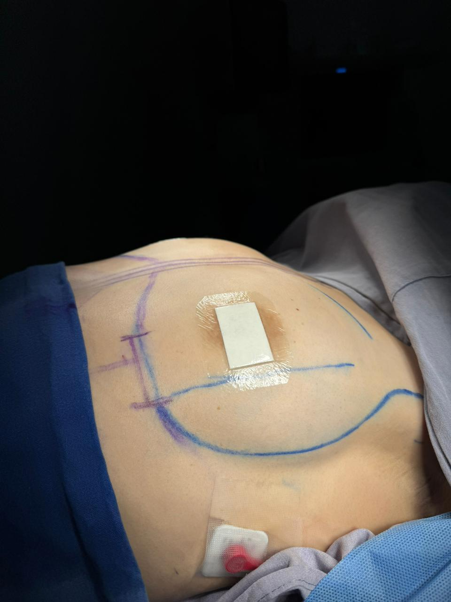
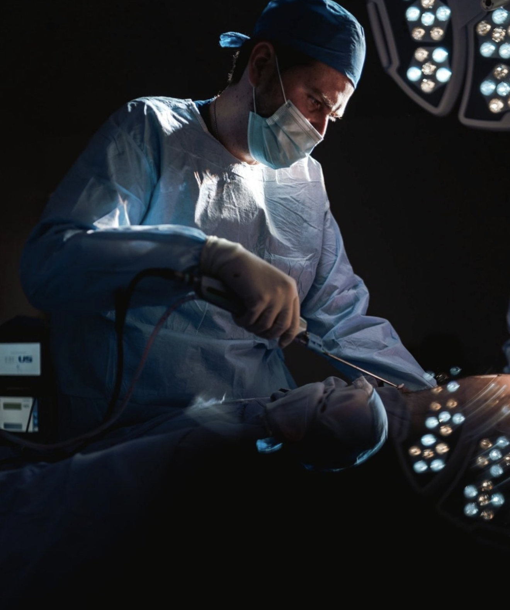

Aumento mamario dual plane · Resultado a 6 semanas
Mamoplastia de aumento con implantes de última generación. Planeación personalizada en cuanto a tamaño, forma, perfil y posición para resultados proporcionados y naturales.
El aumento de mamas, también conocido como mamoplastia de aumento, es una cirugía estética que incrementa el tamaño del busto y mejora su forma y proyección mediante la colocación de implantes mamarios de silicona de última generación. En algunos casos seleccionados también puede realizarse mediante transferencia de grasa propia (aumento autólogo) o mediante una técnica híbrida que combina implantes con injerto graso.
Como cirujano plástico en CDMX, mi enfoque del aumento mamario privilegia el resultado natural por encima del exceso. Cada paciente recibe una planeación completamente personalizada: medimos las características anatómicas del tórax, evaluamos el grosor de los tejidos, analizamos las proporciones corporales y seleccionamos juntos el implante óptimo en cuanto a volumen, perfil, forma y textura. La meta es que el resultado luzca como una versión natural y proporcionada de tu cuerpo, no como una intervención evidente.
Incrementa el tamaño del busto en armonía con tu estatura, tórax y silueta general.
Corrige asimetrías mamarias congénitas o adquiridas durante el procedimiento.
Recupera el volumen perdido tras la lactancia y los cambios hormonales del embarazo.
Marcas con registro sanitario y garantía internacional como Mentor, Allergan y Motiva.
Incisiones diseñadas para esconderse en el surco mamario, areola o axila según el caso.
Impacto positivo en autoestima e imagen personal, especialmente con resultados naturales.
Implante colocado por debajo de la glándula mamaria pero sobre el músculo. Indicado en pacientes con buena cobertura de tejido mamario.
Implante colocado bajo el músculo pectoral. Mayor cobertura del implante, ideal en pacientes delgadas o con poco tejido mamario.
Técnica avanzada que combina la cobertura muscular superior con la subglandular inferior. Resultados particularmente naturales.
Sin implantes, mediante lipoinyección de grasa propia previamente procesada. Indicado para aumentos moderados con liposucción asociada.
Combina implantes con transferencia de grasa para optimizar el contorno superior y los bordes laterales del implante, logrando un resultado supernatural.
Mediciones del tórax y mamas, evaluación de calidad y grosor de tejidos, simetría, expectativas y selección del implante adecuado.
Definición de volumen, forma (anatómico o redondo), perfil (bajo, moderado, alto, extra alto), textura y plano de colocación.
Cirugía de 1 a 2 horas bajo anestesia general en hospital certificado. Requiere 1 noche de hospitalización para monitoreo.
Revisiones programadas durante el primer año y valoraciones periódicas posteriores con ecografía o resonancia mamaria.
La recuperación del aumento mamario es relativamente rápida comparada con otras cirugías mayores. Con el protocolo adecuado de cuidados y prenda compresiva, los pacientes recuperan la rutina rápidamente.
Resultados reales con implantes de marcas reconocidas y técnicas avanzadas.

ANTES DESPUÉSEl costo del aumento de mamas varía según la marca y modelo de implante seleccionado (Mentor, Allergan, Motiva), la técnica empleada (subglandular, submuscular, dual plane, híbrida), la complejidad del caso y si se combina con otros procedimientos. La inversión incluye honorarios médicos, anestesiólogo, hospitalización, implantes con garantía, brassiere postquirúrgico y seguimiento durante 12 meses.
El presupuesto definitivo se entrega tras la consulta de valoración personalizada.El aumento de mamas o mamoplastia de aumento es una cirugía estética que incrementa el tamaño y mejora la forma del busto mediante la colocación de implantes mamarios de silicona o, en algunos casos, mediante transferencia de grasa propia.
Utilizo implantes de marcas reconocidas internacionalmente (Mentor, Allergan, Motiva, entre otros) con registro sanitario vigente en México y garantía del fabricante. La selección depende del perfil, tamaño y textura adecuados para cada paciente.
Los implantes modernos no tienen fecha de caducidad obligatoria. Se recomienda valoración periódica mediante ecografía o resonancia. Si no hay alteraciones, pueden mantenerse muchos años. El recambio solo es necesario si surge alguna indicación médica.
En la mayoría de los casos sí. Las técnicas modernas preservan los conductos lácteos y la inervación necesaria para la lactancia. Sin embargo, ningún cirujano puede garantizar al 100% la lactancia futura, dependa o no de la cirugía.
El resultado preliminar se aprecia entre las 4 y 6 semanas. El resultado final, cuando los implantes han alcanzado su posición definitiva y los tejidos están totalmente acomodados, se aprecia entre los 3 y 6 meses.

La decisión correcta empieza con la información correcta. Agenda tu valoración para diseñar juntos el resultado más natural para tu cuerpo.
Escribir por WhatsApp